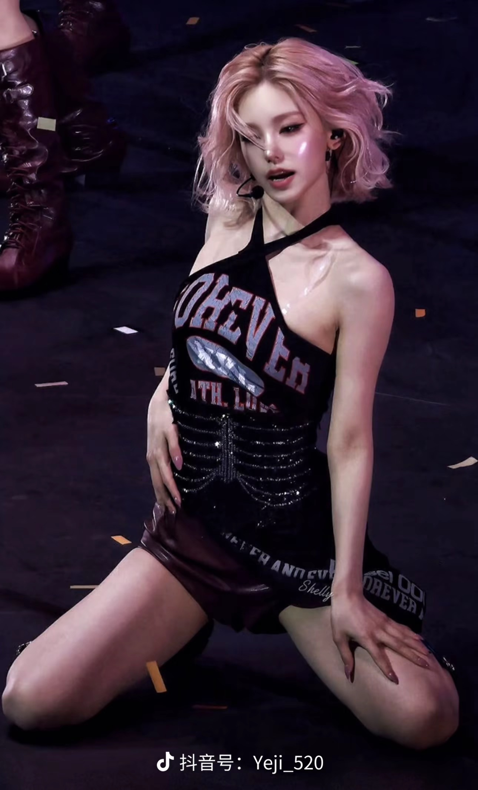
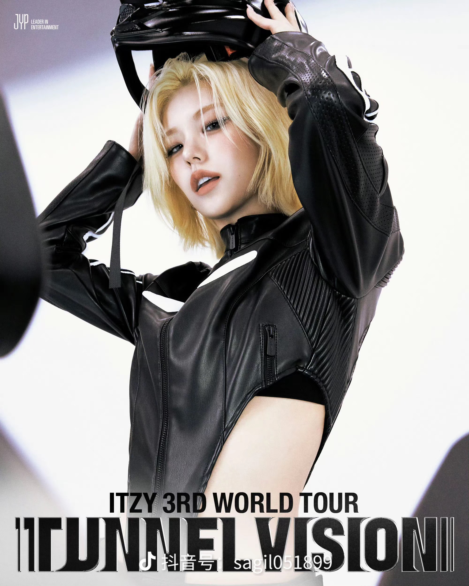
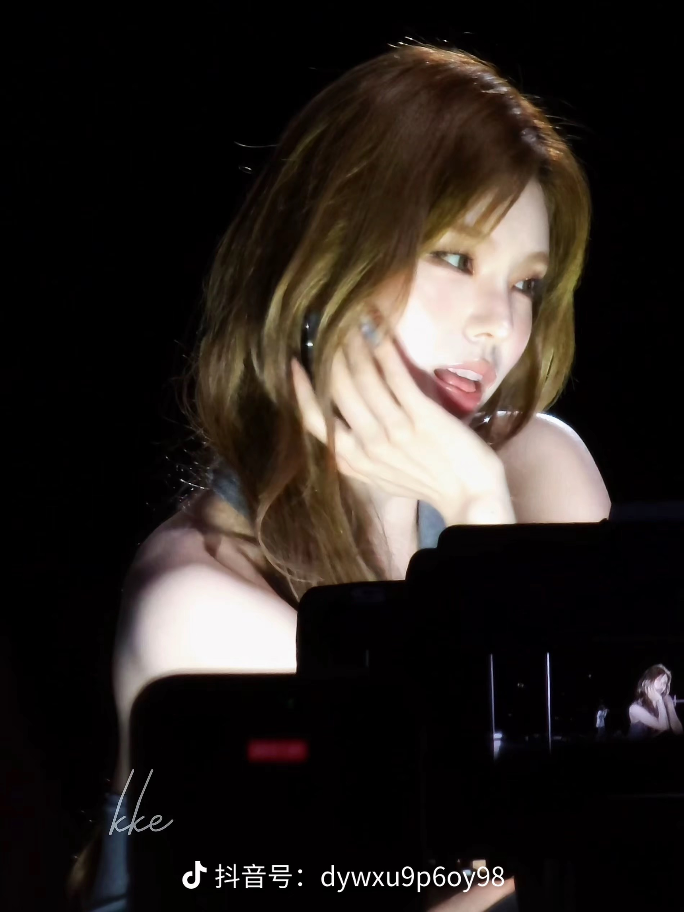

ITZY 队长 · 主舞 · 喜欢她的第 1 年
第一眼是被她的脸吸引的。清冷又有攻击性的五官，舞台上抬眼的那一瞬间就记住她了。
然后是身材和舞蹈。她跳舞的时候线条干净利落，力度收放都刚刚好，看一遍就想再看一遍。
但真正让我留下来的原因是实力。她不是靠某一个瞬间出圈，是一场一场把舞台稳稳撑起来的类型。


喜欢她一年，还没在现场看过一次，这件事一直在我待办清单的最上面。如果有同样想去的，可以给我写信，我们凑一起。
联系邮箱：2797800498@qq.com